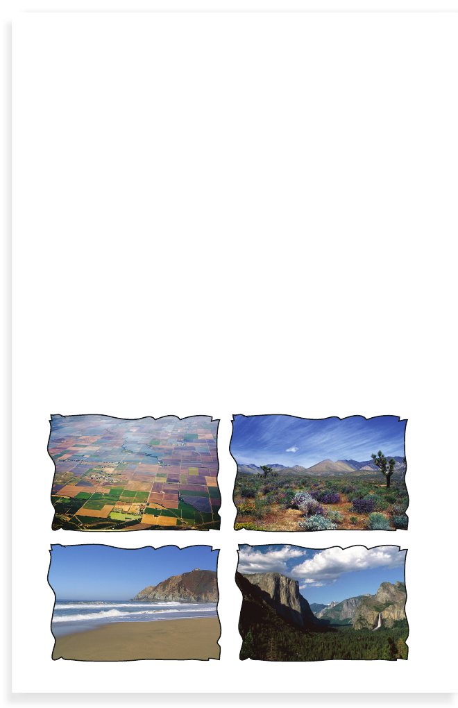

Types of Land
7
California has four main types of land. The coast runs all
along the west side of the state for over 1,200 miles. There
are beaches everywhere. Most of the big cities are on the
coast, such as Los Angeles and San Francisco.
There are mountain ranges, too. The Coast Range runs along
the west coast. The Sierra Nevada is a bigger mountain range
on the east side of the state.
The Central Valley is the low land between the mountain
ranges. Many crops are grown in the valley. Most of the
fruits and vegetables that you eat come from there.
California also has deserts. The Mojave Desert is the largest.
Part of it is called Death Valley. It is so hot there that the
temperature can reach 130 degrees!
8
9
10
10